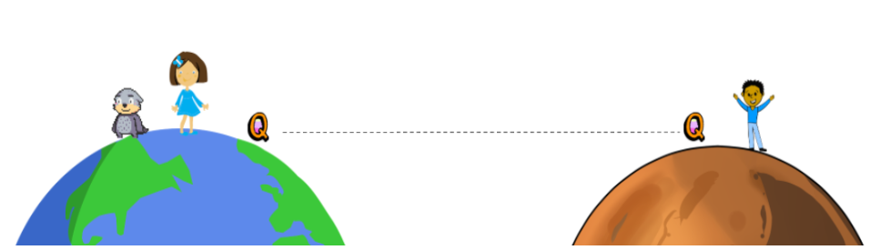
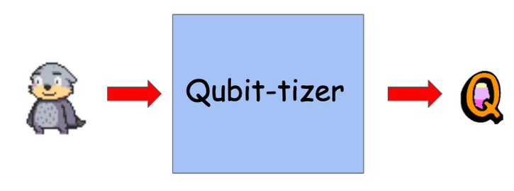
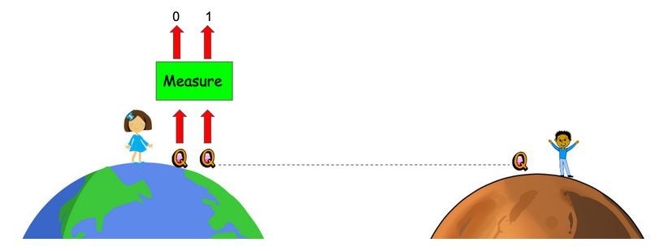
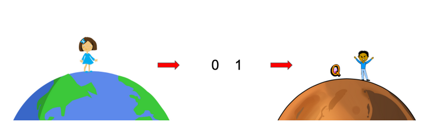
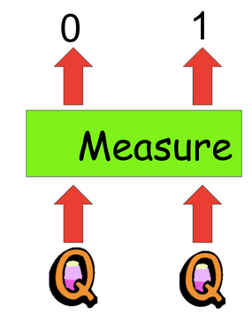
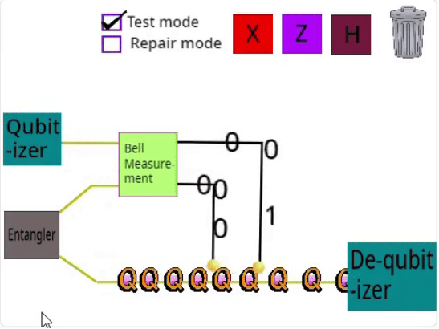
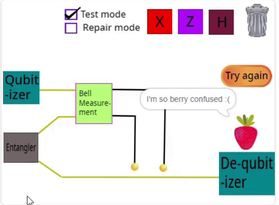
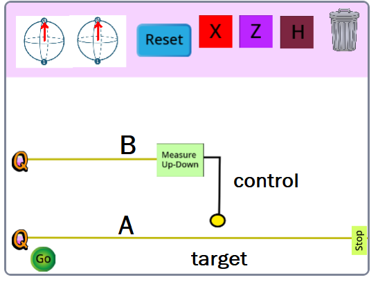

Joey Goes to Mars¶
The year is 2101, and humans and otters, working together, have created a second home on Mars! Joey the otter lives on Earth and would like to go visit Bob, who lives on Mars.
Alice is also friends with Joey and Bob, and decides she’ll help Joey get to Mars. The trick is that otters are afraid of spaceships, so they will have to find a different way to get Joey to Mars.

To get to Mars, Alice and Joey first send one of the qubits from a Bell state to Mars, so that there are entangled particles spread between the two planets.
Next, we’ll see how Alice, Joey, and Bob can team up to get Joey to Mars.
We’ll first of all need to turn Joey into a qubit. This is just for fun (you can’t really turn a creature into a qubit), but we’ll say just Joey has this special power.

Joey is now recorded as the state of the qubit. He might be the up, down, left or right states we’ve learned about. For Joey to safely reach Mars, we need to make sure the correct “Joey” state ends up at Mars.
The first step to teleport the Joey state to Mars is for Alice to measure both her half of the entangled Bell state, and the qubit Joey is recorded into.

Alice will get some measurement outcomes, which are just classical bits like 0 and 1.
After Alice does this measurement, the qubit over on Mars will be in one of the states up, down, left, right. It might not be the same as the Joey state though! We’ll need to fix it up.
We can fix up the qubit on Mars by using Alices measurement outcomes. So, Alice sends her bits over to Bob.

Finally, Bob has to use Alices bits to do the fixing up. If he does it right, joey will be on Mars. If not… who knows what fate could befall Joey!
Our goal in the next few sections will be to understand how Bob can fix up his qubit, so that Joey is successfully transported to Mars.

When Alice measures the two qubits, the two bits she gets out are,
\(\vert00\rangle\) with 25% chance
\(\vert01\rangle\) with 25% chance
\(\vert10\rangle\) with 25% chance
\(\vert11\rangle\) with 25% chance
Because of the randomness in outcomes, some fixing up of the qubit that Bob has is necessary. This is because for each state Alice can measure, Bob’s qubit will be in a different state as well. The only case that requires no fixing up is if the \(\vert00\rangle\) state is measured – this means that Bob’s state has the correct transmitted value.
Otherwise, Bob’s state (the Joey state) can be corrected to match what Alice wanted to send using X and Z gates. For each different outcome,Bob will have to apply different gates to his half of the entangled pair of qubits to fix up the Joey state so that it matches what Alice wanted to send.
How do we know what we need to do to fix the state? Think of the number of 1s in Alice’s measured state as an indicator for how many mistakes there are in Bob’s state. The number of 1s will indicate how many X and Z gates we need to apply. A single 1 means we need either an X or a Z gate (depending on whether the state is \(\vert01\rangle\) or \(\vert10\rangle\)). Two ones, like in \(\vert11\rangle\) will mean that we need both an X and a Z gate.
Here is an almost working teleporter:

You can see that Joey first of all turns into a qubit (using the Qubit-izer), and then the Joey qubit and one other qubit get measured. Some classical bits come out. Then, when the last qubit tries to turn back into Joey, something goes (horrifically) wrong!

If we understand the right gates to put at the end though, we can fix this.
Controlled Gates¶
To do the fixing up, Bob will have to use what are called classically controlled gates. Classically controlled gates are when you either do or don’t do a quantum gate based on a classical bit.
For example, suppose we have two bits, A and B. Then to do a controlled X gate, apply X to the A qubit when B is 1, and don’t do anything when B is 0.
You can test out some controlled gates using the Scratch circuit simulator. You can see how the controlled gate works in the image below. The control qubit is labeled B and the target qubit is labeled A. Take some time to familiarize yourself with the circuit symbol for a controlled gate.

Set up the Scratch project at the link above so that the circuit applies a classically controlled X gate. What gate should you apply to the top qubit in order to flip the bottom qubit?
Z gate
X Gate
H gate
An X gate: this is because both qubits will start off in the up or \(\vert0\rangle\) state. An X gate on the top qubit will put it in the \(\vert1\rangle\) state, which means that it can cause the second qubit to flip if we add a controlled-X gate(since it is the control qubit for the controlled-X gate).
Try to set-up the Scratch circuit so that the circuit does an X gate to the bottom qubit 50% of the time, and does nothing the other 50% of the time.
To do this, you should:
Do a Z gate to the top qubit, and a controlled X to the bottom qubit.
Do an H gate to the top qubit, and a controlled X to the bottom qubit.
Do a Z gate to the top qubit, and a controlled Z gate to the bottom qubit.
Do an H gate to the top qubit, and a controlled Z to the bottom qubit.
An H gate will cause the top (control) qubit to be in a superposition of 0 and 1, \(\vert0\rangle+\vert\1\rangle\). Since the control qubit’s state is uncertain, upon application of a controlled-X gate, there will be uncertainty in whether the target affects the control qubit. In fact, there is a 50% chance that the control qubit, when measured, will have flipped.
Fixing the Circuit¶
Remember that Bob needs to do some controlled gates using Alices qubits so that Joey can safely arrive on Mars.
Your job, as a quantum engineer, is to build the fixer-upper! You can build it in this circuit simulator.
When you’ve built the fixer-upper, it should let Joey arrive safely on Mars three times in a row.
Let’s take a look at one example. Suppose we teleport the up state, we get the measurement outcome \(\vert01\rangle\)
What gate should we add to correct it?
X on the first wire
X on the second wire
Z on the first wire
Z on the second wire
We will need an X on the second wire.
Because the measured state has a single 1, we know that we need either an X or a Z gate on the second or first wires. The way to figure out which wire is really through trial and error in the simulation. This corresponds to the second wire.
To make the circuit work for all cases, we will need to apply the controlled-X and controlled-Z gates on the appropriate wires. Take some time to figure out which gate should go where, and check that your circuit runs correctly!